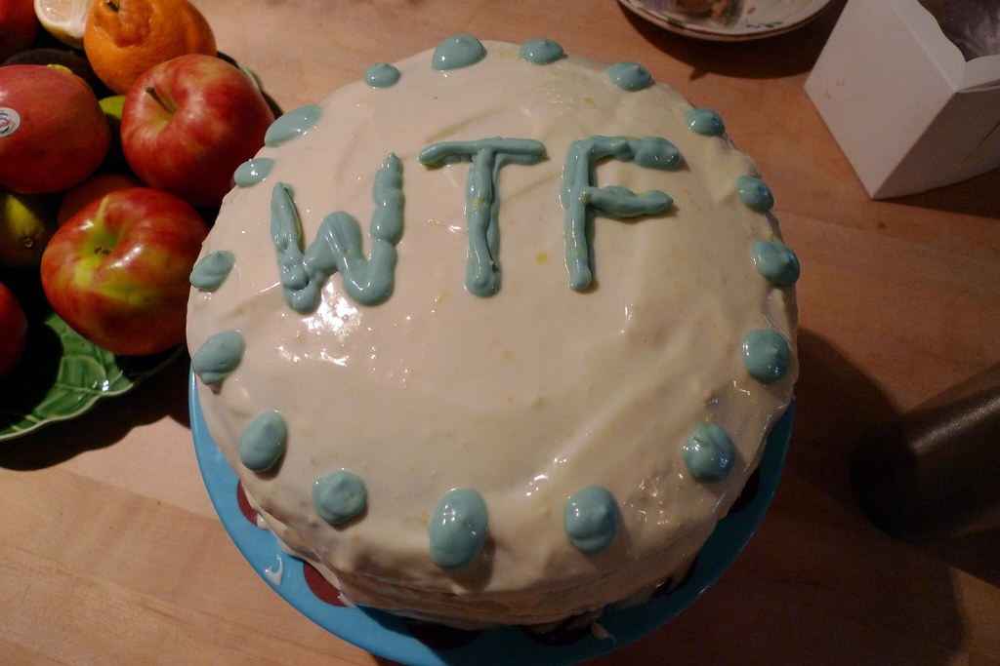

Cake for a Racist

We all have that racist family member that we just wish stopped coming to family gatherings heres a statement from a victim After I had the cake my #$@ turned into a watering hose.
Tips
- Depending on how badly you don't want them to come again the amount of laxisitves varries.
- This is a very serious recipe wink wink.
Recipe
| Ingrediants |
Amount |
| Milk from a albino cow |
One cup |
| Eggs from a albino chicken |
Four eggs |
| White power flour |
Two cups |
| Racist butter |
One stick |
| Laxatives |
Plenty |
Instructions
- Put all the ingrediants in a mixing bowl and stir until it can't indivusial ingrediants
- Pour into pan and put into oven at 400F for 30 minutes
- Take out of oven and let cool
- Once done you should have a ordinary looking cake with eight servings it should have taken a around an hour